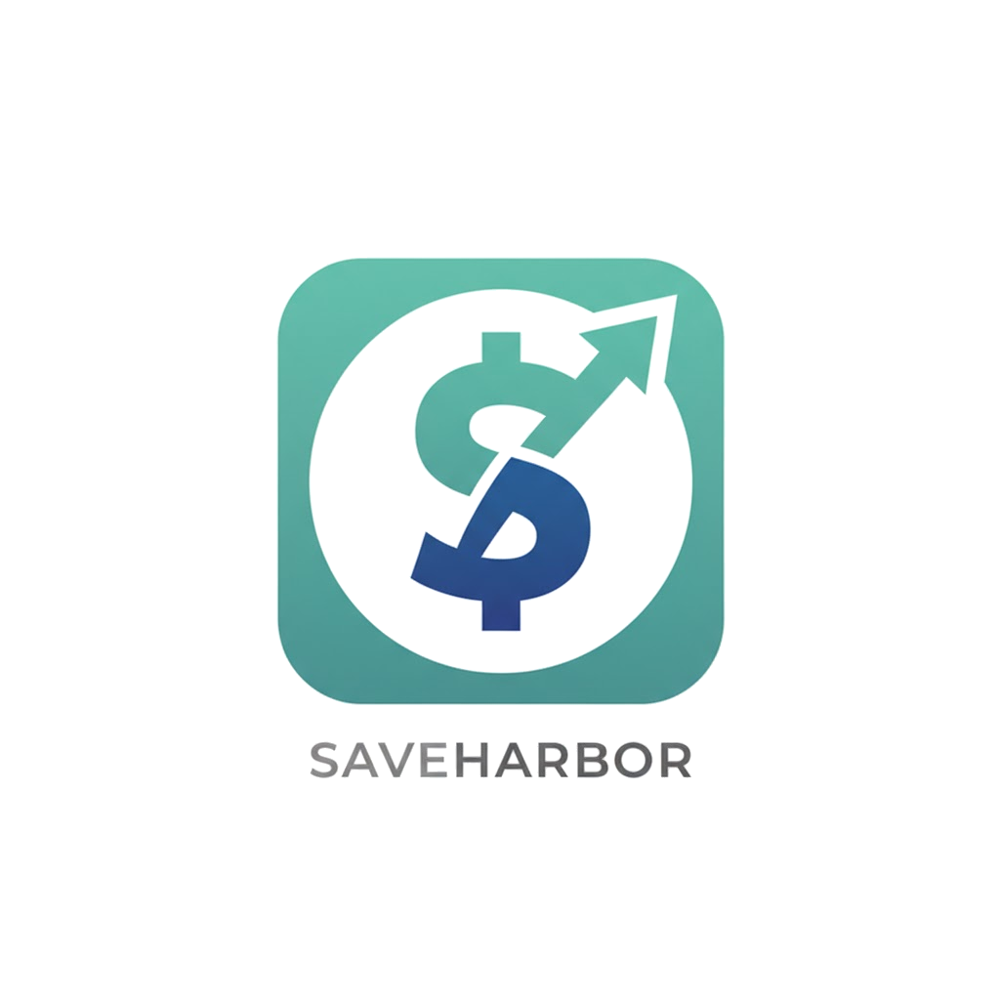
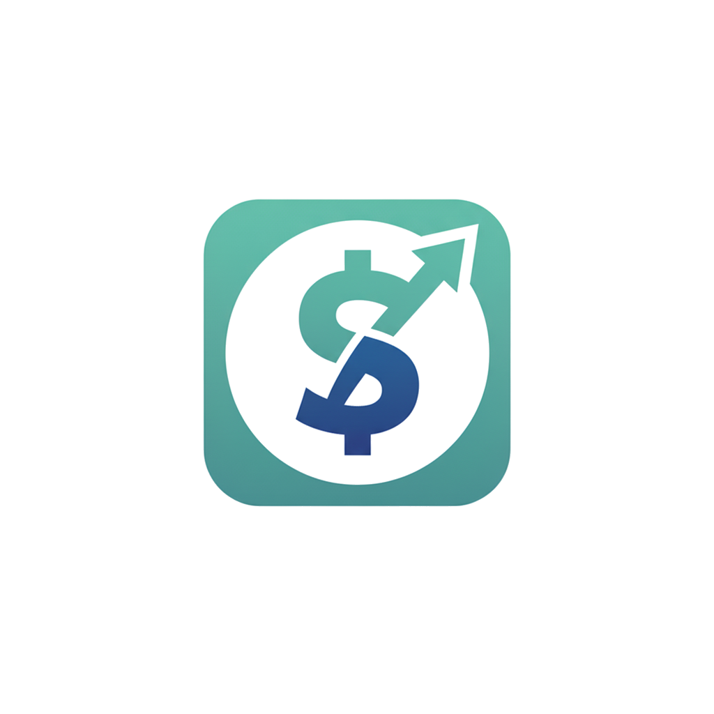
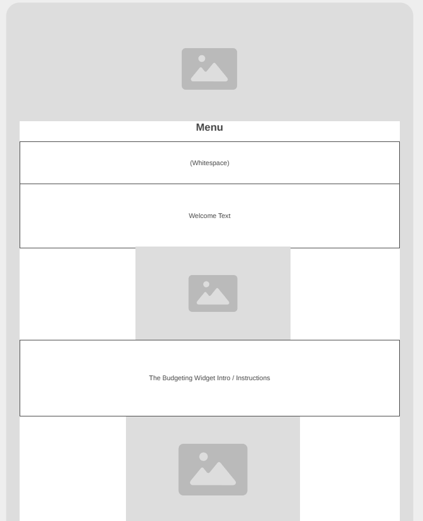
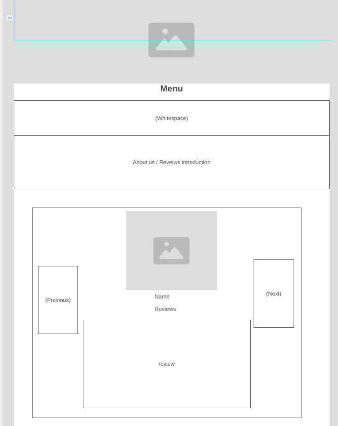

- Image for welcoming the user
- Image for welcoming the user
 - Papers / Budgeting image (for budget calculator)
- Papers / Budgeting image (for budget calculator)
 - Image of people shaking hands (for footer)
- Image of the CEO
- Image of people shaking hands (for footer)
- Image of the CEO
 - Use of the different logos for the favicon / other icons as needed
- Use of the different logos for the favicon / other icons as needed
*As a disclaimer I used the help of ChatGPT5.1 in generating the images of people and in assisting with generating text for page content.
- The personal site must consist of a home page and at least one child page.
- The website must be hosted on the web.
- Each page of your Web site must satisfy the following requirements:
Significant textual content, appropriate for your audience, so that they can understand the meaning and message of this site.
At least one image that relates to the content of the page.
Working links to your child page(s).
Be laid out and styled according to your site plan wireframes.
Be responsive
Be visually appealing and easily readable.
Be valid HTML and CSS
Score at least 96 on Lighthouse on Performance and Accessibility.
- The site should have dynamic elements provided by Javascript, your code should show elements of the following:
It should show some level of organization: at a minimum it should have more than one function.
It should include DOM interaction: select an element, modify it, and listen for and react to events
It should show examples of conditional branching
Each of the following should be used: Objects, ES Modules, Arrays and array method usage (forEach, map, reduce, filter, etc)
This will be a banking application's home screen, it will be trying to persuade viewers to join this bank. The audience will be middle aged and younger adults who are looking for a bank to manage their finances through.
The main page and subpage will both have a light/dark theme and a collapsable menu bar for mobile screens. The main page will have a dynamic budgeting tool where the user can add or remove items within their budget. This tool will let you add 'positive' items like paychecks and negative items like 'groceries'. You can add or remove as many as you'd like dynamically. When you're ready, it will tally everything together and output a message. The message will be random tips or encouragement based on if you lost money or not. This tool will have dynamic content that auto-populates initially with some sample items. The subpage will be a combined 'about us' and 'review page'. There will be a carousell that will feature dynamically populated 'featured' reviews that include a name, picture, and rating / comment. It will slide every few seconds or when the user clicks the next arrows. There will also be a dynamically populated review / comment section with some pre-made comments / reviews. The user can comment with their personal review as well.
Choose a logo image for your personal site.
 Choose a color scheme and one or more fonts that you think will work well and enter the information into the plan's HTML and CSS.
I will use the color white and a darkish blue color '#2a4682' for my light theme. White will be the primary color used and the blue the secondary. For menus or element blocks, I will use the blue, but the body as a whole will be white. When using white as the background, I will use the same 'blue #2a4682' color
For my dark theme, I will use a dark gray color '#222' as my primary color where the color white is used for the text. I will have a secondary color, a light purple '#9184d2' that uses the same dark gray color '#222' for the text. The dark gray and white will be used on the body as a whole while the purple and gray are used on menus and element blocks
The following are the 2 fonts I will be using.
Lato Font - For my headers
Sans Serif Font - For my paragraphs / base text
I use a large font-size to help improve readability and give a 'calm' and 'relaxing' feel.
Write the text that will be on the pages for your site, generate any data that you will use, and find the images/icons/graphics you need.
- Welcome text
You deserve a financial life that feels strong, confident, and in your control and we’re here to help you make that happen. Our vision centers around you: your goals, your growth, and your future.
Whether you’re saving for something big, getting back on track, or building healthy money habits for the first time, we’re committed to giving you the support you need to move forward with confidence.
We help you do this through long-term, high-interest accounts that grow your savings faster, along with clear, easy-to-use tools that put you in charge of every step.
Track your progress, reduce debt, build momentum, and stay focused on what matters most to you. No complicated banking language, no hidden fees just features built to make your life simpler and your financial journey easier.
We don't want you to just take our word for it, we invite you to explore our "customer review page" to see how others are using us to reach their goals, or
check out one of the free budgeting tools we provide to all our users. You’ve got this and we’re here to back you every step of the way. When you're ready, go ahead and create your own account to start building the financial future you want!
- Budget tool instructions
Interested in exploring some of the power we give to you as a member? Check out our simplified budgeting tool! In just a few minutes, you can set goals, track spending, spot opportunities to save, and see exactly where your money is going each month.
No stress, no complicated setup, and no pressure. Just an easy way to understand your habits and start making smarter choices right away. Give it a try and see how quickly small changes can turn into real progress!
1. Enter your monthly expenditures
2. Enter your monthly income
3. Analyze the results!
- Why us and join now
Our mission comes from a very real place. Before starting this company, our CEO spent years feeling overwhelmed by budgeting apps that were too complicated and banks that offered accounts but no real guidance.
Even with steady income, he constantly found himself guessing how much to save, guessing how long it would take to pay off old debt, guessing if he was even on the right track. He knew there had to be a better way.
That experience is what inspired this platform: a simple, modern banking experience built to help you feel confident, informed, and in control of your financial future.
That’s why we focus on clarity, real support, and tools that make a difference. Our accounts are designed to grow your savings faster, our budgeting tools help you understand your habits instantly, and our clear projections show you where you’re headed not just where you’ve been.
We’d love for you to be part of this. Explore what we offer or join us today and start building the financial future you’ve always wanted!
- Image of smiling people (hero image)
- Image for welcoming the user
- Papers / Budgeting image (for budget calculator)
- Image of people shaking hands (for footer)
- Image of the CEO
- Use of the different logos for the favicon / other icons as needed
Write the text that will be on the pages for your site, generate any data that you will use, and find the images/icons/graphics you need.
- About Us / Reviews introduction
We built this platform with one goal in mind: to make managing money feel understandable, achievable, and empowering. Too many individuals and families are left to figure things out alone, with banks offering accounts but not real support.
We wanted to change that. Everything we provide and create is designed to help you build confidence, get organized, and make progress without the frustration or confusion that usually comes with managing finances.
And the best part? Our customers feel the difference. People tell us they finally understand their spending habits, feel motivated to save, and actually enjoy watching their progress grow.
Many share stories of paying down debt faster than expected, hitting savings goals for the first time, or simply feeling less stressed about money.
Their experiences are what drive us they remind us why we built this and why we keep improving every tool, feature, and experience we offer.
If you want an inside look at what real users are saying, explore the reviews below and see how others are using our platform to transform their financial journey.
We hope their stories inspire you, guide you, and show you what’s possible when you have the right support behind you!
- Text to invite the user to give a review or join us
If you’re already part of our community, we’d love to hear your story. Your experience whether it’s a small win, a big milestone, or something you’ve learned along the way helps others see what’s possible.
Every review gives someone else the encouragement they need to start improving their financial life, and your voice could be exactly what inspires them to begin.
Sharing your thoughts also helps us grow. We listen closely to what our members say so we can keep improving our tools, add new features, and build a platform that truly supports your goals.
If you have a moment, we’d be grateful for your feedback. Your journey matters, and we’re honored to be part of it.
- 6 comments / reviews
“This is the first time I’ve actually felt in control of my money. The budgeting tool makes it so easy to understand where I’m at and what I need to do next.”
“I’ve tried other banks, but none made saving feel this simple. The long-term, high-interest account helped me build momentum faster than I expected.”
“Customer support has been incredible quick answers and real guidance instead of canned replies. It’s clear they actually want you to succeed.”
“I used to get overwhelmed trying to budget, but their tools break everything down in a way that finally makes sense. It’s changed how I manage my paycheck!”
“The projections feature helped me see exactly how long it would take to pay off my debt, and for the first time, it felt achievable. That clarity made all the difference.”
“I joined just hoping to save a little more, but I ended up feeling way more confident about my entire financial plan. Their focus on helping users grow really shows.”
- Image of smiling people (hero image)
- 3 images of people in featured reviews


 - Use of the different logos for the favicon / other icons as needed
- Use of the different logos for the favicon / other icons as needed
Create two wireframes, one for the home page and one for the child page
for your site. Add your wireframes as images or links to the site plan.
I will present 4 wireframes, 2 for each page. I will have a mobile and
desktop version of the website.
Main Page - Desktop

Main Page - Mobile
Sub Page - Mobile

Sub Page - Desktop